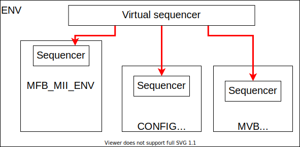

SystemVerilog and UVM tutorial
This is manual describes how the UVM verification in our environment should be written.
Other tutorials
This document does not serve as a general UVM or a SystemVerilog manual. Various tutorials can be found at:
Basic usage of the UVM methodology in the OFM repository
This document describes one of the possible solutions for some common verification issues.
Interface
An Interface creates connections between the Device Under Test(DUT) and the verification environment. If there is no serious reason to do otherwise, use wire logic instead of logic. Wire logic is a net whereas logic is a variable. The reason for this solution is that we want to use a common interface for both, RX and TX communication(if you want to learn more, visit Wire logic vs logic). It is required to use a clocking block in an Interface if there is no reason to do otherwise. Interfaces do not have namespaces therefore each one must have a unique name.
Properties
The DUT often communicates with its surroundings using a specific protocol which usually has some restrictions. These restrictions can be controlled by the Properties module which can be instantiated and connected to an Interface. The module then controls whether the DUT behaves according to the specification of the given communication protocol.
module mfb_properties (input logic RESET, mfb_if RX_MFB);
property prop_rdy;
(posedge RX_MFB.CLK) disable iff(RESET == 1'b1)
!$isunknown(MFB_IF.DST_RDY) && !$isunknown(MFB_IF.SRC_RDY);
endproperty
assert property (prop_rdy) else begin `uvm_fatal("MFB INTERFACE: src and dst rdy have to be always valid\n") end
endmodule
Driver
A Driver writes data to an Interface. It is required to use the try_get or try_next_item function to get the next item. Using the get or get_next_item function is not recommended. For example, if a Sequence uses wait #(4ns), it can desynchronize the Driver when a Clocking Block is in use and a race condition can occur.
Example of the sequence with 10ns space between items:
class sequence_simple extends uvm_sequence#(sequence_item);
`uvm_object_utils(pkg::sequence_simple)
function new(string name);
super.new(name);
endfunction
task body ();
req = sequence_item::type_id::create("req");
for (int unsigned it = 0; it < 10 it++) begin
start_item(req);
req.randomize();
finish_item(req);
#(10)ns // using the *get* task instead of *try_get* in a driver can put it out of synchronization or break a protocol
end
endtask
endclass
class driver extends uvm_driver#(sequence_item);
`uvm_component_utils(pkg::driver)
virtual interface vif;
function new(string name, uvm_component parent = null);
super.new(name, parent);
endfunction
task run_phase (uvm_phase phase);
forever begin
seq_item_port.try_next_item(req);
if (req != null) begin
vif.cb.data <= req.data;
seq_item_port.item_done();
end else begin
vif.cb.data <= 'x;
end
@(vif.cb);
end
endtask
endclass
Agent
Please stick to the following rules when writing agents, environments or packages:
Use the name of the class together with the name of the package in the UVM registration macros.
The name of a class should be monitor, driver, sequencer, config, sequence_item. A suffix such as *_rx, *_tx can be used if required.
For sequences, use the sequence_* prefix.
Variable names should have the prefix m_*.
A file should have the same name as the class it contains. Each agent is placed into its own directory together with a package file pkg.sv and interface file interface.sv if the interface is required.
class agent extends uvm_agent;
`uvm_component_utils( example::agent )
uvm_analysis_port#(sequence_item) analysis_port;
config m_config;
sequencer m_sequencer;
driver m_driver;
monitor m_monitor;
function new(string name, uvm_component parent = null);
super.new(name, parent);
endfunction
function void build_phase(uvm_phase phase);
super.build_phase(phase);
if (!uvm_config_db#(config)::get(this, "", "m_config", m_config))
`uvm_fatal(...);
// The value of the first parameter has to be the same as the name of the variable
m_monitor = monitor::type_id::create("m_monitor", this);
if (m_config.active == ACTIVE) begin
m_driver = driver::type_id::create("m_driver", this);
m_sequencer = sequencer::type_id::create("m_sequencer", this);
end
endfunction
function void connect_phase(uvm_phase phase);
virtual axi_lite_interface #(ADDR_WIDTH, DATA_WIDTH) vif;
super.connect_phase(phase);
if (uvm_config_db#(virtual axi_lite_interface#(ADDR_WIDTH, DATA_WIDTH))::get(this, "", "interface", vif) == 0) begin
`uvm_fatal(this.get_full_name(), "Virtual interface axi_lite_interface has not been found.");
end
m_monitor.vif = vif;
analysis_port = m_monitor.analysis_port;
if (m_config.active == ACTIVE) begin
m_driver.vif = vif;
m_driver.seq_item_port.connect(m_sequencer.seq_item_export);
end
endfunction
endclass
Configuration object
Every agent has its own configuration object, which can modify its behavior. There are two most commonly used variables in the configuration object. The first one is the active variable which indicates whether the agent is active or passive. An active agent contains a driver and actively drives communication through the interface. A passive agent is used for observation of the communication on the interface. The second one is the interface_name variable which is used in the case of direct communication between the agent and the DUT. The agent finds the correct interface in the UVM configuration database under the interface_name.
Sequence
The sequence contains three functions that can change the randomization output (pre_do, mid_do, post_do). Function pre_do is called before the randomization. It is suitable for changing the randomization rules. Function mid_do is called after the randomization and before the result is sent to the driver. This is suitable for setting a specific value that would be difficult to randomize. Function post_do is called after the driver processes a transaction. This is suitable for generating statistics or do some post processing.
class config_sequence extends config::simple_simple;
`uvm_object_utils(seq::config_sequence)
function new (string name = "");
super.new(name);
endfunction
virtual function pre_do(uvm_sequence_item this_item);
//this happens before the randomization
this_item.size_max = max + 10;
endfunction
virtual function mid_do(uvm_sequence_item this_item);
//this happens after the randomization
this_item.addr = addr++;
endfunction
virtual function post_do(uvm_sequence_item this_item);
//this happens after a sequence item has been processed
cfg.add(this_item.data);
endfunction
endclass
Sequence library
For all agents, it is recommended to create a Sequence library that contains multiple sequences. More sequences help to uncover more bugs and it also improves coverage with small effort. The Sequence library randomly selects a sequence and runs it on the current Sequencer. This is repeated until the Sequence library runs the required number of sequences. Each sequence can create a different test scenario like burst mode, transmission of small or large packets, sequential read/write operations on the same address and more.
class sequence_packet_small extends uvm_sequence #(sequence_item);
`uvm_object_utils(example::sequence_packet_small)
rand int unsigned transactions;
constraints c_transactions{
transactions inside {[100:2000]};
}
function new (string name = "");
super.new(name);
endfunction
task body();
req = sequence_item#(C_CHAR_WIDTH)::type_id::create("req");
for (int unsigned it = 0; it < transactions; it++) begin
start_item(req);
req.randomize() with {data.size() inside [1:10]};
finish_item(req);
end
endtask
endclass
class sequence_packet_large extends uvm_sequence #(sequence_item);
`uvm_object_utils(example::sequence_packet_large)
rand int unsigned transactions;
constraints c_transactions{
transactions inside {[100:2000]};
}
function new (string name = "");
super.new(name);
endfunction
task body();
req = sequence_item#(C_CHAR_WIDTH)::type_id::create("req");
for (int unsigned it = 0; it < transactions; it++) begin
start_item(req);
req.randomize() with {data.size() inside [10000:200000]};
finish_item(req);
end
endtask
endclass
A creation of the sequence library:
class sequence_lib extends uvm_common::sequence_library #(config_sequence, sequence_item);
`uvm_object_utils(example::sequence_lib)
`uvm_sequence_library_utils(example::sequence_lib)
function new(string name = "");
super.new(name);
init_sequence_library();
endfunction
// subclass can redefine and change run sequences
// can be useful in specific tests
virtual function init_sequence(config_sequence param_cfg = null);
if (param_cfg == null) begin
this.cfg = new();
end else begin
this.cfg = param_cfg;
end
this.add_sequence(sequence_packet_large::get_type());
this.add_sequence(sequence_packet_small::get_type());
endfunction
endclass
Run the sequence in the environment or the test:
class env extends uvm_env
...
task run_phase(uvm_phase phase);
sequence_lib seq = sequence_lib::type_id::create("sequence_lib");
sequence_lib.init_sequence(cfg.seq_cfg);
if(!sequence_lib.randomize())
`uvm_fatal (...);
sequence_lib.start(m_agent.m_sequencer);
endtask
...
endclass
Package
In all registration macros (those are `uvm_components_* and `uvm_object_*), it is required to use a class name together with a package name, for example: `uvm_components_utils(pkg::class)
Warning
If you don’t register a component with the package name, the verification can instantiate the wrong class or behave strangely.
It is strongly recommended to use namespaces inside a verification code. Do not use import pkg::* command unless it is necessary. The only situation where you can use it is to import the uvm_package.
Layered agents
Most of the verification tests do not need to generate low-level data (i.e. individual signals). That is why there are high-level generators that can create whole packets. This allows for a packet approach and separates it from a low-level protocol. For a layered agent, it is a good idea to use a pointer from a low-level sequence to a higher sequencer. For this you need to know about the design pattern called the abstract factory as well as how it is used in the UVM methodology.
Environment
The environment groups together other environments and agents in logical order. In this case, the environment groups high- and low-level agents. Required steps are:
Registration of a new high-level monitor which completes a high-level transactions from low-level transactions.
Creation of a low-level sequence that pulls items from the high-level sequencer and generates low-level transactions
Use the second argument in function create() when creating sequence or sequence_library because it simplifies the run of some sequences for specific tests.

class env extends uvm_env;
...
function void build_phase(uvm_phase phase);
//change common monitor to specific monitor
byte_array_moinitor::type_id::set_inst_override(byte_array_mfb_monitor::get_type(), {this.get_full_name(), ".m_byte_array_agent.*"});
super.build_phase(phase);
m_byte_array_agent = byte_array_agent::type_id::create("m_byte_array_agent", this);
m_mfb_agent = mfb_agent::type_id::create("m_mfb_agent", this);
endfunction
function void connect_phase(uvm_phase phase);
byte_array_mfb_monitor mon;
$cast(mon, m_byte_array_agent.m_monitor);
m_mfb_agent.analysis_port.connect(mon.analysis_imp);
analysis_port = m_byte_array_agent.m_monitor.analysis_port;
m_sequencer = m_byte_array_agent.m_sequencer;
endfunction
task run_phase(uvm_phase phase);
// It is recommended to use the sequence library
byte_array_mfb_sequence seq;
// Create new sequence library
seq = byte_array_mfb_sequence::type_ide::create("seq", this);
// Connect high level sequencer to sequence.
seq.hl_sequencer = m_byte_array_agent.m_sequencer;
forever begin
seq.randomize();
// run sequence on low level sequencer
seq.start(m_mfb_agent.m_sequencer);
end
endtask
endclass
Low-level sequence
The purpose of the low-level sequence is to create low-level sequence_items from a high-level sequence_item. For example, we use byte_array as the high-level sequence_item and 32bit word as the low-level transaction. The following example shows how to parse high-level items into low-level items using a for loop. The low-level sequence is going to run in the environment during the run_phase task as was shown in the previous example.
task body();
forever begin
//get higher level transaction from higher level sequencer
hl_sequencer.get_next_item(hl_item);
//break hl_item into lower level transaction
for (int unsigned it = 0; it < hl_item.data.size(); it += WORD_SIZE) begin
start_item(req);
req.data = { << 8{hl_item.data[it +: WORD_SIZE]}};
req.sof = 1'b0;
req.eof = 1'b0;
if (it == 0)
req.sof = 1'b1;
if (it + WORD_SIZE >= hl_item.data.size())
req.eof = 1'b1;
finish_item(req);
end
//send item done to higher level sequencer
hl_sequencer.item_done();
end
endtask
High-level monitor
The purpose of the high-level monitor is to create a high-level sequence_item from low-level sequence_items. Unfortunately, the general high-level monitor cannot cooperate with the low-level transaction. Therefore, the common approach is to reimplement the high-level monitor and use the UVM configuration database as shown in the previous example. Two important functions are performed: the build_phase and the connect_phase. The build_phase function shows how to use the reimplemented monitor with the UVM configuration database. The connect_phase function shows how to connect the low-level monitor to the high-level monitor.
class byte_array_mfb_monitor extends byte_array::monitor;
...
virtual function void write(ll_transaction tr);
// start of hl transaction
if (tr.sof) begin
fifo_data.delete();
item = ll_transaction::type_id::create("item");
end
for (int unsigned it = 0; it < DATA_WIDTH; it++) begin
fifo_data.push_back(tr.data[(it +1)*8-1 -: 8]);
end
// end of hl transaction
if (tr.eof) begin
item.data = fifo_data
analysis_port.write(item);
end
endfunction
...
endclass
Configuration object
The environment creates one or multiple configuration objects for its subenvironments or internal agents. The following example shows how to create two configuration objects for agents which are instantiated in the current environment.
class env extends uvm_env
...
function void build_phase(uvm_phase phase);
byte_array_cfg m_byte_array_cfg;
mfb_cfg m_mfb_cfg;
uvm_config_db#(byte_array_mfb_cfg)::get(this, "", "m_config", m_config);
//save config object for subcomponent
m_byte_array_cfg = new();
m_byte_array_cfg.active = m_config.active;
uvm_config_db#(byte_array_cfg)::set(this, "m_byte_array_agent", "m_config", m_byte_array_cfg);
m_mfb_cfg = new();
m_mfb_cfg.active = m_config.active;
m_mfb_cfg.vif_name = m_config.vif_name;
uvm_config_db#(mfb_cfg)::set(this, "m_mfb_agent", "m_config", m_mfb_cfg);
//create subcomponent
m_byte_array = byte_array::type_id::create("m_byte_array", this);
m_mfb_agent = mfb_agent::type_id::create("m_mfb_agent", this);
endfunction
...
endclass
Sequence library
It is recommended to use a sequence library as the lower sequence. This is going to improve the coverage.
class sequence_library extends uvm_sequence_library;
`uvm_object_utils(byte_array_mfb::sequence_library)
`uvm_sequence_library_utils(byte_array_mfb::sequence_library)
function new(string name = "");
super.new(name);
init_sequence_library();
endfunction
virtual function init_sequence(config_sequence param_cfg = null);
if (param_cfg == null) begin
this.cfg = new();
end else begin
this.cfg = param_cfg;
end
//run only this sequence
this.add_sequence(test::sequence_packet_small::get_type());
this.add_sequence(test::sequence_packet_mid::get_type());
this.add_sequence(test::sequence_packet_rand_spaces::get_type());
this.add_sequence(test::sequence_packet_constant::get_type());
this.add_sequence(test::sequence_packet_increment::get_type());
this.add_sequence(test::sequence_packet_large::get_type());
endfunction
endclass
Run of a specific sequence
This example shows how to run a specific sequence on the lower sequencer in the environment from the Test.
class sequence_lib extends byte_array_mfb::sequence_library;
`uvm_object_utils(test::sequence_lib)
`uvm_sequence_library_utils(test::sequence_lib)
function new(string name = "");
super.new(name);
init_sequence_library();
endfunction
virtual function init_sequence(config_sequence param_cfg = null);
if (param_cfg == null) begin
this.cfg = new();
end else begin
this.cfg = param_cfg;
end
//run only this sequence
this.add_sequence(test::sequence_packet_large::get_type());
endfunction
endclass
The code below shows how to change the sequence library using the UVM abstract factory.
class test extends uvm_test;
...
function void build_phase(uvm_phase phase);
//change implementation
byte_array_mfb::sequence_lib::type_id::set_inst_override(sequence_lib::get_type(), {this.get_full_name() ,".m_env.rx_agent*"});
...
//create environment with change
m_env = component::env::type_id::create("m_env", this);
endfunction
endclass
Common environment
Environment (uvm_env) puts agents, subenvironments, and other components into a logical unit. A common use of the environment is to connect the high-level agent with the low-level one. The picture below shows an Environment with two agents, one subenvironment containing a high-level agent connected to a low-level agent, and one virtual sequencer.

Virtual sequencer
A virtual sequencer connects all highest-level sequencers into one which runs a virtual sequence. It serves to synchronize all highest-level sequencers (so the agents start sending data at the same time). If the environment contains subenvironments like in the previous picture, the virtual sequencer connects only to the highest-level sequencer in each subenvironment.
class sequencer extends uvm_sequencer;
`uvm_component_utils(env::sequencer)
mfb::sequencer m_mfb_sequencer;
mvb::sequencer m_mvb_sequencer;
config::sequencer m_config_sequencer;
function new(string name, uvm_component parent = null);
super.new(name, parent);
endfunction
endclass
class sequence_simple extends uvm_sequence;
`uvm_object_param_utils(env::sequence_simple)
`uvm_declare_p_sequencer( env::sequencer )
//sequence define
mfb::sequence_simple mfb_sequence;
mvm::sequence_simple mvb_sequence;
config::sequence_simple config_sequence;
function new (string name = "");
super.new(name);
endfunction
task body();
fork
`uvm_do_on(mfb_sequence, p_sequencer.m_mfb_sequencer);
`uvm_do_on(mvb_sequence, p_sequencer.m_mvb_sequencer);
`uvm_do_on(config_sequence, p_sequencer.m_config_sequencer);
join
endtask
endclass
Virtual sequence and synchronization
TODO
Scoreboard
A Scoreboard is connected to the DUT, receives transactions from it, and compares them with transactions received from a Model. Operations performed in a Model (there can be more than one) are according to the DUT’s specified (expected) behavior. The Model’s transactions are considered reference transactions. Implementing the report_phase task enables the user (you) to print arbitrary statistics at the end of the simulation to inform you about how detailed the verification was. It is a good practice to write a uniform text such as VERIFICATION SUCCESS when verification ends successfully. This can be useful in automatic testing frameworks like Jenkins, etc.
Verification should check if the design is not stuck. For example, the DUT can set all RDY or VLD signals to zero and not change them till the end of the verification. This means that no packet passes through the design, which should be reported by the verification. This check is prowided by systemverilog component uvm_common::comparer_
A Model should be implemented as an independent class. The example below shows how should the Scoreboard and Model cooperate. The scoreboard only checks the equality of the transactions. If the transactions are not equal, the Scoreboard prints an error message through the UVM_error macro.
Note
The UVM_error macro does not stop the verification. At the end of the verification, the Scoreboard has to check if some errors occurred.

class scoreboard extends uvm_scoreboard;
`uvm_component_utils(env::scoreboard)
//CONNECT DUT
uvm_analysis_export #(packet::sequence_item) analysis_export_rx;
uvm_analysis_export #(packet::sequence_item) analysis_export_tx;
//output fifos
protected uvm_common::comparer_ordered#(packet::sequence_item) m_comparer;
//models
protected model m_model;
function new(string name, uvm_component parent = null);
super.new(name, parent);
analysis_export_rx = new("analysis_imp_rx", this);
analysis_export_tx = new("analysis_imp_tx", this);
endfunction
function void build_phase(uvm_phase phase);
m_comparer = uvm_common::comparer_ordered#(packet::sequence_item)::type_id::create("m_comparer", this);
m_model = model::type_id::create("m_model", this);
//lot of dut connection between components isnt 1 to 1 but with small change. with this fifos
//it can be made with models too.
m_model.input = fifo_model_input#(packet::sequence_item)::type_id::create("input", m_model);
endfunction
function void connect_phase(uvm_phase phase);
fifo_model_input#(packet::sequence_item) model_in;
$cast(model_in, m_model.input);
analysis_export_rx.connect(model_in.anlysis_export);
analysis_export_tx.connect(m_comparer.analysis_imp_dut);
m_model.output.connect(m_comparer.analysis_imp_model);
endfunction
virtual function void report_phase(uvm_phase phase);
if (m_comparer.success() == 1 && m_comparer.used() == 0) begin
`uvm_info(get_type_name(), "\n\t---------------------------------------\n\t---- VERIFICATION SUCCESS ----\n\t---------------------------------------", UVM_NONE)
end else begin
`uvm_info(get_type_name(), "\n\t---------------------------------------\n\t---- VERIFICATION FAIL ----\n\t---------------------------------------", UVM_NONE)
end
endfunction
endclass
Request-response Agents
Some agents may require bidirectional communications. For this purpose, the UVM has the Request-Response mechanism.
For example, the read request on MI has two transactions. The first transaction is from a master to a slave (the request) and the second transaction is a response from that slave back to the master.

Reset
One possible solution to the problem when a reset is generated in the middle of the verification (not only at its start) is to use the wait task to wait for all required inputs. An example is provided below showing this type of the solution. However, there is a problem taking place when the process reads the input A and waits for the input B, then the reset happens and all data should be flushed.
Scoreboard
class scoreboard extends uvm_scoreboard;
`uvm_component_utils(env::scoreboard)
uvm_analysis_imp_reset#(reset::sequence_item, scoreboard) analysis_imp_reset;
protected model m_model;
protected uvm_common::comparer_ordered#(packet::sequence_item) m_comparer;
function new(string name, uvm_component parent = null);
super.new(name, parent);
analysis_imp_reset = new("analysis_imp_reset", this);
endfunction
function void write_reset(reset::sequence_item tr);
//RESET
m_comparer.flush();
m_regmodel.reset();
m_model.reset();
endfunction
endclass
Coverage
Coverage is one of the essential metrics for checking a verification status. Coverage can tell whether the verification of the design has been done properly or not. Every verification should check whether its coverage is high enough. If it’s not, the verification engineer should explain why.
class output_cover #(OUTPUTS) extends uvm_subscriber#(sequence_item);
`uvm_component_param_utils(packet_port_env::output_cover #(OUTPUTS))
sequence_item item;
covergroup cov_packet;
items_size : coverpoint item.packet.data {
bins num[512] = {[0:2****16-1]};
illegal_bins others = default;
}
items_port : coverpoint item.port {
bins num[OUTPUTS] = {[0:OUTPUTS-1]};
illegal_bins others = default;
}
cross items_size, items_port;
endgroup
...
function void write(sequence_item tr);
item = tr;
cov_packet.sample();
endfunction
endclass
Functional coverage
Every model should contain a functional coverage to check if all of its functionalities have been tested (if all instances/states that could occur have occurred). Functional coverage can be measured in the model.
class coverage_base extends uvm_subscriber#(sequence_item);
sequence_item item;
covergroup m_cov;
ones: coverpoint $countones(item.mash) {
bins ones[] = {[0:20]};
}
endgroup
function new(string name, uvm_component parent = null);
super.new(name, parent);
m_cov = new();
endfunction
function void write(sequence_item t);
item = t;
m_cov.sample();
endfunction
endclass
Code coverage
In contrast to the functional coverage, code coverage reports how many lines, conditional jumps and expressions were checked during the verification.
A simple metric is usually generated by the verification tool. In the OFM verification environment, this can be set up by adding set SIM_FLAGS(CODE_COVERAGE) “true” into the top_level.fdo simulation macro.
Generating coverage reports
ModelSim can generate coverage reports in the HTML format:
coverage report -html -output cov_html -instance=/testbench/DUT_U -annotate -details -assert -directive -cvg -code bcefst -verbose -threshL 50 -threshH 90
Multiple reports from one simulation can be merged into one:
coverage save -instance /testbench/DUT_U -assert -directive -cvg -code bcefst -verbose actual.ucdb
vcover merge final.ucdb final.ucdb actual.ucdb
vcover report -html -output cov_html -details -threshL 50 -threshH 90 final.ucdb
Comments to each line:
(This command is for the multiver script.) Save the coverage after every simulation into actual.ucdb.
Merge coverage from the current simulation with others that were created earlier.
Generate the HTML output.
Verification example
In this example, we introduce the MFB splitter component which divides a single MFB input stream into N MFB output streams. With every incoming packet on the MFB comes also information about the output port. That information is received on the MVB interface. For the sake of simplicity, the MVB interface is not aligned to the MFB. The FIFO method is used so the solution only depends on the ordering of the MFB and MVB streams.
The following image shows the connections between the blocks of such verification:

Byte_array_port environment
The environment is used for grouping the byte_array and the port. The advantage of this approach lies in generating data for the MVB and the MFB in one roll.
Note
Please always use uvm_logic_vector_array instead byte_array
class sequence_item extends uvm_sequence_item;
`uvm_object_utils(byte_array_port_env::sequence_item)
rand byte_array::sequence_item packet;
rand int unsigned port;
...
endclass
Because it is required to divide the high-level sequence, we cannot use a pointer directly to the high-level sequencer. Instead of that, we use the driver to divide each sequence into two pieces.
class driver extends uvm_driver#(sequence_item);
`uvm_component_utils(byte_array_port_env::driver)
mailbox#(byte_array::sequence_item) msg_byte_array;
mailbox#(int unsigned) msg_port;
function new(string name, uvm_component parent = null);
super.new(name, parent);
msg_byte_array = new(10); //max 10 requests
msg_port = new(10);
endfunction
task run_phase(uvm_phase phase);
byte_array::sequence_item tr_paket;
int unsigned tr_port;
forever begin
seq_item_port.get_next_item(req);
tr_paket = req.paket.clone();
msg_byte_array.put(tr_paket);
tr_port = req.port;
msg_port.put(tr_port);
seq_item_port.item_done(req);
end
endtask
endclass
The environment contains two sequences: One to generate byte_array::sequence_item and the second to generate mvb::sequence_item.
class sequence_byte_array extends uvm_sequence#(byte_array::sequence_item);
`uvm_object_utils(byte_array_port_env::sequence_byte_array)
mailbox#(byte_array::sequence_item) in_data;
...
task body();
forever begin
in_data.get(req);
start_item(req);
finish_item(req);
end
endtask
endclass
class sequence_mvb extends uvm_sequence#(mvb::sequence_item);
`uvm_object_utils(byte_array_port_env::sequence_mvb)
mailbox#(int unsigned) in_data;
...
task body();
req = mvb::sequence_item::type_id::create("byte_array_port_env::mvb");
int unsigned mvb_valid_items;
forever begin
bit rdy = 0;
start_item(req);
req.randomize();
for (int unsigned it = 0; it < REGIONS; it++) begin
if (req.vld[it] == 1 && in_data.num() != 0) begin
rdy = 1;
in_data.get(req.data[it]);
end else begin
req.data[it] = 'x
end
end
req.rdy &= rdy;
finish_item(req);
end
endtask
endclass
The following code shows how to put it all together:
class env extends uvm_env;
`uvm_component_utils(byte_array_port_env::env)
sequencer m_sequencer;
driver m_driver;
monitor m_monitor;
//low level agents
byte_array_mfb::agent byte_array_agent;
mvb::agent mvb_agent;
...
task run_phase(uvm_phase phase);
sequence_byte_array seq_byte_array;
sequence_mvb seq_mvb;
seq_byte_array = sequence_byte_array::type_id::create("sequence_byte_array");
seq_byte_array.in_data = m_driver.msg_byte_array;
seq_mvb = sequence_mvb::type_id::create("sequence_mvb");
seq_mvb.in_data = m_driver.msg_mvb;
fork
seq_byte_array.start(byte_array_agent.m_sequencer);
seq_mvb.start(mvb_agent.m_sequencer);
join
endtask
endclass
Model
Inputs and outputs of the model are implemented by the Transaction Level Model (TLM) in the UVM where the uvm_analysis_*, uvm_tlm_analysis_* macros are used.
The model can have a slightly different output and input than the DUT. The reason for this is better code readability. For the model, you don’t always need variables of the same width, so you can use integers instead logic [10:0] and have better structures. This approach has one disadvantage. You cannot simply have two models because they can have slightly different outputs and inputs. This can make it impossible to connect two models. For this reason, the model should use the uvm_common::fifo#(FIFO_TYPE) component for the inputs. The model doesn’t create the FIFO, it just creates a value, and the FIFO will be created by a higher component. More info is in the components documentation in the FIFO section. uvm_common::fifo
Sometimes it is required to pass meta-information through models. The uvm_common::model_item#(TYPE_ITEM) class is created for some information. This class provides three variables. The first variable, start, is an associative array where the input time of each source transaction can be stored. This is very useful for an HDL developer. The second variable is a tag that contains a string tag. Tag is useful when merging two streams into one. Then the merged output can be out of order, but data from one stream have to be in order. Then in the tag, the name of the input interface can be stored. More info can be found in the component documentation in the comparer (tagged) section. The third variable is the required transaction. Another problem can be when we have one model that contains other models, one of which should discard packets. One approach is to create the discarding logic. However, this might be quite difficult in some cases. A different approach is to assume that the DUT discards the packets correctly. Then we can tap the inner discard signal of the DUT and use its values to discard the packets in the model.
Verification of Network Module Logic. is example of how you can impement model.
class model_item extends uvm_sequence_item;
`uvm_object_utils(packet_splitter::model_item)
uvm_logic_vector_array::sequence_item#(8) data;
int unsigned port;
...
endclass
class model#(PORTS) extends uvm_component;
`uvm_component_param_utils(packet_splitter::model#(PORTS))
uvm_common::fifo#(uvm_common::model_item#(model_item)) input;
uvm_analysis_port#(uvm_common::model_item#(uvm_logic_vector_array::sequence_item#(8))) output[PORTS];
function new (string name, uvm_component parent = null);
super.new(name, parent);
input = null;
for (int unsigned it = 0; it < PORTS; it++) begin
string it_num;
it_num.itoa(it);
output[it] = new({"sc_output_", it_num}, this);
end
endfunction
task run_phase(uvm_phase);
uvm_common::model_item#(model_item) tr;
uvm_common::model_item#(uvm_logic_vector_array::sequence_item#(8)) tr_out;
forever begin
input.get(tr);
tr_out = uvm_common::model_item#(uvm_logic_vector_array::sequence_item#(8))::type_id::create("tr_out", this);
tr_out.item = uvm_logic_vector_array::sequence_item#(8)::type_id::create("tr_out.item", this);
tr_out.start = tr.start;
tr_out.tag = tr.tag;
tr_out.item = tr.item.data
//model write packet to output
output[tr.item.port].write(tr.packet);
end
endtask
endclass
Create model input fifo
`uvm_analysis_imp_decl(_data)
`uvm_analysis_imp_decl(_meta)
class model_input_fifo#(ITEM_WIDTH, META_WIDTH) extends uvm_common::fifo#(uvm_common::model_item#(model_data#(ITEM_WIDTH, META_WIDTH)));
`uvm_component_param_utils(net_mod_logic_env::model_input_fifo#(ITEM_WIDTH, META_WIDTH))
typedef model_input_fifo#(ITEM_WIDTH, META_WIDTH) this_type;
uvm_analysis_imp_data#(uvm_logic_vector_array::sequence_item#(ITEM_WIDTH), this_type) analysis_export_data;
uvm_analysis_imp_meta#(uvm_logic_vector::sequence_item#(META_WIDTH), this_type) analysis_export_meta;
typedef struct {
uvm_logic_vector_array::sequence_item#(ITEM_WIDTH) input_item;
time input_time;
} data_item;
typedef struct {
uvm_logic_vector::sequence_item#(META_WIDTH) input_item;
time input_time;
} meta_item;
protected data_item tmp_data[$];
protected meta_item tmp_meta[$];
function new(string name, uvm_component parent = null);
super.new(name, parent);
analysis_export_data = new("analysis_export_data", this);
analysis_export_meta = new("analysis_export_meta", this);
endfunction
function void write_data(uvm_logic_vector_array::sequence_item#(ITEM_WIDTH) t);
tmp_data.push_back('{t, $time()});
endfunction
function void write_meta(uvm_logic_vector::sequence_item#(META_WIDTH) t);
tmp_meta.push_back('{t, $time()});
endfunction
task run_phase(uvm_phase phase);
uvm_common::model_item#(model_data#(ITEM_WIDTH, META_WIDTH)) item;
forever begin
data_item data;
meta_item meta;
wait (tmp_meta.size() != 0 && tmp_data.size() != 0);
data = tmp_data.pop_front();
meta = tmp_meta.pop_front();
item = uvm_common::model_item#(model_data#(ITEM_WIDTH, META_WIDTH))::type_id::create("item", this);
item.item = model_data#(ITEM_WIDTH, META_WIDTH)::type_id::create("item.item", this);
item.item.data = data.input_item;
item.item.meta = meta.input_item;
item.tag = "USER_TO_CORE";
item.start[{item.tag, " DATA"}] = data.input_time;
item.start[{item.tag, " META"}] = meta.input_time;
this.push_back(item);
end
endtask
endclass
Scoreboard
class comparer_meta #(ITEM_WIDTH, META_WIDTH) extends uvm_common::comparer_base_tagged#(model_data#(ITEM_WIDTH, META_WIDTH), uvm_logic_vector::sequence_item#(META_WIDTH));
`uvm_component_param_utils(net_mod_logic_env::comparer_meta#(ITEM_WIDTH, META_WIDTH))
function new(string name, uvm_component parent = null);
super.new(name, parent);
endfunction
virtual function int unsigned compare(MODEL_ITEM tr_model, DUT_ITEM tr_dut);
//return tr_model.meta.compare(tr_dut);
return (tr_dut.data[24-1:0] == tr_model.meta.data[24-1:0]);
endfunction
virtual function string message(MODEL_ITEM tr_model, DUT_ITEM tr_dut);
string msg = "";
$swrite(msg, "%s\n\tDUT PACKET %s\n\n", msg, tr_dut.convert2string());
$swrite(msg, "%s\n\tMODEL PACKET%s\n\n", msg, tr_model.meta.convert2string());
return msg;
endfunction
endclass
class comparer_data #(ITEM_WIDTH, META_WIDTH) extends uvm_common::comparer_base_tagged#(model_data#(ITEM_WIDTH, META_WIDTH), uvm_logic_vector_array::sequence_item#(ITEM_WIDTH));
`uvm_component_param_utils(net_mod_logic_env::comparer_data#(ITEM_WIDTH, META_WIDTH))
function new(string name, uvm_component parent = null);
super.new(name, parent);
endfunction
virtual function int unsigned compare(MODEL_ITEM tr_model, DUT_ITEM tr_dut);
return tr_model.data.compare(tr_dut);
endfunction
virtual function string message(MODEL_ITEM tr_model, DUT_ITEM tr_dut);
string msg = "";
$swrite(msg, "%s\n\tDUT PACKET %s\n\n", msg, tr_dut.convert2string());
$swrite(msg, "%s\n\tMODEL PACKET%s\n\n", msg, tr_model.data.convert2string());
return msg;
endfunction
endclass
class scoreboard #(CHANNELS, REGIONS, ITEM_WIDTH, META_WIDTH, HDR_WIDTH, RX_MAC_LITE_REGIONS) extends uvm_scoreboard;
`uvm_component_param_utils(net_mod_logic_env::scoreboard #(CHANNELS, REGIONS, ITEM_WIDTH, META_WIDTH, HDR_WIDTH, RX_MAC_LITE_REGIONS))
// TX path
uvm_analysis_export #(uvm_logic_vector_array::sequence_item#(ITEM_WIDTH)) tx_input_data;
uvm_analysis_export #(uvm_logic_vector::sequence_item #(META_WIDTH)) tx_input_meta;
uvm_analysis_export #(uvm_logic_vector_array::sequence_item#(ITEM_WIDTH)) tx_out[CHANNELS];
//comparesrs
protected uvm_common::comparer_ordered#(uvm_logic_vector_array::sequence_item#(ITEM_WIDTH)) tx_compare[CHANNELS];
// RX path
uvm_analysis_export #(uvm_logic_vector_array::sequence_item#(ITEM_WIDTH)) rx_input_data[CHANNELS]; // data for model
uvm_analysis_export #(uvm_logic_vector_array::sequence_item#(ITEM_WIDTH)) rx_out_data; // MFB data from DUT
uvm_analysis_export #(uvm_logic_vector::sequence_item#(HDR_WIDTH)) rx_out_hdr; // MVB headers used to identify channel
//comparers
// Thing about comparer. Comparing have to be same as because output have to be tagged same.
protected comparer_data #(ITEM_WIDTH, HDR_WIDTH) rx_compare_data;
protected comparer_meta #(ITEM_WIDTH, HDR_WIDTH) rx_compare_meta;
// MVB discard
uvm_analysis_export #(uvm_logic_vector::sequence_item#(1)) mvb_discard[CHANNELS];
protected model #(CHANNELS, ITEM_WIDTH, META_WIDTH, HDR_WIDTH) m_model;
function new(string name, uvm_component parent);
super.new(name, parent);
// TX path
tx_input_data = new("tx_input_data", this);
tx_input_meta = new("tx_input_meta", this);
// RX path
for (int unsigned it = 0; it < CHANNELS; it++) begin
string it_str;
it_str.itoa(it);
tx_out[it] = new({"tx_out_", it_str}, this);
rx_input_data[it] = new({"rx_input_data_", it_str}, this);
mvb_discard[it] = new({"mvb_discard_", it_str}, this);
end
rx_out_data = new("rx_out_data", this);
rx_out_hdr = new("rx_out_hdr", this);
endfunction
function void build_phase(uvm_phase phase);
m_model = model #(CHANNELS, ITEM_WIDTH, META_WIDTH, HDR_WIDTH)::type_id::create("m_model", this);
m_model.tx_input = model_input_fifo#(ITEM_WIDTH, META_WIDTH)::type_id::create("tx_input" , m_model);
for (int it = 0; it < CHANNELS; it++) begin
string it_string;
it_string.itoa(it);
tx_compare[it] = uvm_common::comparer_ordered#(uvm_logic_vector_array::sequence_item#(ITEM_WIDTH))::type_id::create({"tx_compare_", it_string}, this);
m_model.rx_input[it] = uvm_common::fifo_model_input#(uvm_logic_vector_array::sequence_item#(ITEM_WIDTH))::type_id::create({"rx_input_data_", it_string} , m_model);
m_model.rx_discard[it] = uvm_common::fifo_model_input#(uvm_logic_vector::sequence_item #(1))::type_id::create({"rx_discard_", it_string} , m_model);
end
rx_compare_data = comparer_data #(ITEM_WIDTH, HDR_WIDTH)::type_id::create("rx_compare_data", this);
rx_compare_meta = comparer_meta #(ITEM_WIDTH, HDR_WIDTH)::type_id::create("rx_compare_meta", this);
endfunction
function void connect_phase(uvm_phase phase);
model_input_fifo#(ITEM_WIDTH, META_WIDTH) tx_input;
uvm_common::fifo_model_input#(uvm_logic_vector_array::sequence_item#(ITEM_WIDTH)) rx_input;
uvm_common::fifo_model_input#(uvm_logic_vector::sequence_item #(1)) rx_discard;
//TX INPUT
$cast(tx_input, m_model.tx_input);
tx_input_data.connect(tx_input.analysis_export_data);
tx_input_meta.connect(tx_input.analysis_export_meta);
//RX INPUT
for (int unsigned it = 0; it < CHANNELS; it++) begin
m_model.tx_output[it].connect(tx_compare[it].analysis_imp_model);
tx_out[it].connect(tx_compare[it].analysis_imp_dut);
$cast(rx_input, m_model.rx_input[it]);
rx_input_data[it].connect(rx_input.analysis_export);
$cast(rx_discard, m_model.rx_discard[it]);
mvb_discard[it].connect(rx_discard.analysis_export);
end
m_model.rx_output.connect(rx_compare_data.analysis_imp_model);
m_model.rx_output.connect(rx_compare_meta.analysis_imp_model);
rx_out_data.connect(rx_compare_data.analysis_imp_dut);
rx_out_hdr.connect(rx_compare_meta.analysis_imp_dut);
endfunction
function int unsigned used();
int unsigned ret = 0;
ret |= m_model.used();
for (int unsigned it = 0; it < CHANNELS; it++) begin
ret |= tx_compare[it].used();
end
ret |= rx_compare_data.used();
ret |= rx_compare_meta.used();
return ret;
endfunction
function int unsigned success();
int unsigned ret = 1;
for (int unsigned it = 0; it < CHANNELS; it++) begin
ret &= tx_compare[it].success();
end
ret &= rx_compare_data.success();
ret &= rx_compare_meta.success();
return ret;
endfunction
function void report_phase(uvm_phase phase);
int unsigned total_errors = 0;
string msg = "";
// TX path
for (int unsigned it = 0; it < CHANNELS; it++) begin
$swrite(msg, "%s\n\tTX path OUTPUT [%0d]: %s", msg, it, tx_compare[it].info());
end
$swrite(msg, "%s\n\t---------------------------------------", msg);
$swrite(msg, "%s\n\tRX path OUTPUT DATA : %s", msg, rx_compare_data.info());
$swrite(msg, "%s\n\tRX path OUTPUT META : %s", msg, rx_compare_meta.info());
if (this.success() == 1 && this.used() == 0) begin
`uvm_info(get_type_name(), {msg, "\n\n\t---------------------------------------\n\t---- VERIFICATION SUCCESS ----\n\t---------------------------------------"}, UVM_NONE)
end else begin
`uvm_info(get_type_name(), {msg, "\n\n\t---------------------------------------\n\t---- VERIFICATION FAIL ----\n\t---------------------------------------"}, UVM_NONE)
end
endfunction
endclass
Test environment
After creating the model and the scoreboard, we can assemble a test environment env. We use the byte_array_port environment, which we have created earlier, and the byte_array_mfb environment, which is located in the OFM repository in the directory comp/uvm/byte_array_mfb. It is required to specify the path in the Modules.tcl file.
class env#(PORTS, REGIONS) extends uvm_env;
`uvm_component_param_utils(packet_splitter::env#(PORTS, REGIONS))
//rx agents
byte_array_port_env::env rx_env;
//tx agent
byte_aray_mfb::tx_env_base#(REGIONS) tx_env[PORTS];
//scoreboard
scoreboard#(PORTS, REGIONS) sc;
function new(string name, uvm_component parent = null);
super.new(name, parent);
endfunction
function void build_phase(uvm_phase phase);
rx_env = byte_array_port_env::env::type_id::create("rx_env", this);
for (int unsigned it = 0; it < PORTS; it++) begin
string it_num;
it_num.itoa(it);
tx_env[it] = byte_aray_mfb::tx_env_base#(REGIONS)::type_id::create({"tx_env_", it_num}, this);
end
sc = scoreboard#(PORTS, REGIONS)::type_id::create("sc", this);
endfunction
function void connect_phase(uvm_phase phase);
rx_env.analysis_port.connect(sc.analysis_export_rx_packet);
for (int unsigned it = 0; it < PORTS; it++) begin
tx_env[it].m_byte_array.analysis_port(sc.analysis_export_tx_packet[it]);
end
endfunction
endclass
Test
The test runs the highest level sequence and creates specific adjustments to the verification environment. For some tests, we want to generate a full-speed traffic for the MFB without any inter-frame gaps or gaps between the frames. These adjustments are added by the UVM abstract factory. For more information, see the sequence library section on this page.
An example of the full speed MFB sequence:
class sequence_rx_rdy extends uvm_sequence(mfb::sequence_item)
`uvm_object_utils(test::sequence_rx_rdy)
function new(string name);
super.new(name);
endfunction
task body();
req = mfb::sequence_item::type_id::create();
forever begin
`uvm_do_with (req, {rdy == 1});
end
endtask
endclass
An example of the Test:
class base extends uvm_test
`uvm_component_utils(test::base)
packet_splitter::env_main#(8, 2) m_env;
function new(string name, uvm_component parent = null);
super.new(name, parent);
endfunction
function void build_phase(uvm_phase phase);
m_env = packet_splitter::env_main#(8,2)::type_id::create("m_env", this);
endfunction
task run_phase(uvm_phase phase);
test::sequence_rx seq_rx_packet;
test::sequence_tx_rdy seq_tx_rdy;
phase.raise_objection(this);
fork
`uvm_do(seq_rx_packet, m_env.rx_env.m_sequencer);
`uvm_do(seq_tx_rdy, m_env.tx_env.m_sequencer);
join_any
phase.drop_objection(this);
endtask
endclass
Properties
Properties contain interfacing protocol rules to which the DUT must adhere as well as other DUT properties.
module mfb_splitter_properties #(OUTPUTS) (logic CLK, reset_if RESET, mfb_if RX_MFB, mvb_if RX_MFB, mfb_if TX_MFB[OUTPUTS]);
mfb_properties (
.CLK (CLK),
.RESET (RESET),
.MFB (RX_MFB)
);
mvb_properties (
.CLK (CLK),
.RESET (RESET),
.MVB (RX_MVB)
);
// you can add more properties if you want.
endmodule
Testbench
It is required to put the $stop() command after the run_test command. If you do not want to quit ModelSim after drop_objection, you must set the finish_on_completion variable to zero. If you set the variable finish_on_completion to zero, the verification might not stop. This problem can be fixed by putting the $stop() command after run_test() command. For example, you must set the finish_on_completion variable to zero if you wish to generate coverage.
module testbench #(OUTPUTS);
logic CLK = 0;
reset_if rst(CLK);
mvb_if #(REGIONS, MVB_ITEM_WIDTH) rx_mvb(CLK);
mfb_if #(REGIONS, REGION_SIZE, BLOCK_SIZE, ITEM_WIDTH) rx_mfb(CLK);
mfb_if #(REGIONS, REGION_SIZE, BLOCK_SIZE, ITEM_WIDTH) tx_mfb[OUTPUTS](CLK);
// create clock
always #(CLK_PERIOD) CLK = ~CLK;
// Start of tests
initial begin
uvm_root m_root;
virtual mfb_if #(REGIONS, REGION_SIZE, BLOCK_SIZE, ITEM_WIDTH) v_tx_mfb;
v_tx_mfb = tx_mfb;
// Configuration TX
for (int i = 0; i < OUTPUTS; i++ ) begin
string i_string;
i_string.itoa(i);
uvm_config_db#(virtual mfb_if #(REGIONS, REGION_SIZE, BLOCK_SIZE, ITEM_WIDTH))::set(null, "", {"OUTPUT_MFB_",i_string}, v_mfb_tx[i]);
end
// save pointer to interface into configuration database
uvm_config_db#(virtual mfb_if #(REGIONS, REGION_SIZE, BLOCK_SIZE, ITEM_WIDTH))::set(null, "", "INPUT_MFB", rx_mfb);
uvm_config_db#(virtual mvb_if #(REGIONS, MVB_ITEM_WIDTH))::set(null, "", "INPUT_MVB", rx_mfb);
uvm_config_db#(virtual reset_if)::set(null, "", "RESET", rst);
m_root = uvm_root::get(); //get root component
m_root.finish_on_completion = 0; //now finish on end. required stop command after run_test
//stop reporting ILLEGALNAME when sequence in sequence library have been started
m_root.set_report_id_action_tier("ILLEGALNAME",UVM_NO_ACTION);
// Stop reporting for us unusefull information
uvm_config_db#(int) ::set(null, "", "recording_detail", 0);
uvm_config_db#(uvm_bitstream_t)::set(null, "", "recording_detail", 0);
run_test();
$stop(2);
end
// DUT module
DUT #(OUTPUTS) DUT_U (
.CLK (CLK),
.RESET (rst),
.RX_MFB (rx_mfb),
.RX_MVB (rx_mvb),
.TX_MFB (mfb)
);
// check of properties
MFB_SPLITTER_PROPERTIES #(OUTPUTS) PRT (
.CLK (CLK),
.RESET (rst),
.RX_MFB (rx_mfb),
.RX_MVB (rx_mvb),
.TX_MFB (mfb)
);
endmodule
NOTES
UVM_info
Please use this macro to print information about the verification. The following table lists the available log levels in the UVM and the specific information they provide
uvm_info level |
What information is printed |
|---|---|
UVM_NONE |
Statistics and verification results at the end of the verification |
UVM_LOW |
Statistics during the verification run. |
UVM_MEDIUM |
The model’s configuration, if it is configured. |
UVM_HIGH |
Model output transactions. |
UVM_FULL |
Model output transactions + all data from which the output transaction is calculated (for example, hash algorithm) |
UVM_DEBUG |
The sequence name when the sequence is started and other debug information. |
UVM_error vs UVM_fatal
The difference between the UVM_error and the UVM_fatal macros is in the meaning. The UVM_fatal macro represents an error in the verification environment. For example, when an agent cannot find an interface. The UVM_error macro should be used for reporting errors in the DUT, for example, when the output transaction does not match the expected transaction.
For better readability of the messages written by the macros, follow these rules:
Put the newline and the tabulator character at the beginning of each string “\n\ttext”
It is required to put more tabulator characters (\t) after a newline depending of the indentation.
Do not write the newline character (\n) at the end of a text. The UVM macros automatically add it to the end of the string.
Parametrized object
If you need a parametrized uvm_object or uvm_component, use registration macros uvm_component_param_utils and uvm_object_param_utils. Parametrized object can be required when an interface uses a signal with parametrized width.
class non_parametrized_class extends uvm_object;
`uvm_object_utils#(pkg::non_parametrized_class);
...
endclass
class parametrized_class#(PARAM) extends uvm_object;
`uvm_object_param_utils#(pkg::non_parametrized_class#(PARAM));
logic [PARAM-1:0] val;
...
endclass
Synchronization
The UVM provides the uvm_event class to achieve synchronization. This class offers even more functionalities, such as the standard barrier in SystemVerilog. There is also the uvm_pool, which provides access to the uvm_barrier using a name.
OFM verification environment
When you need to create a new agent, you can get inspiration from: MVB agent. You should place all classes related to one agent or an environment into one directory. A package (pkg.sv) includes all files in that directory. It should also contain an existing Modules.tcl file which includes pkg.sv, interface.sv (if required), and all other required packages. If the interface is bidirectional, then all files with the uvm_component should contain two classes: agent_rx and agent_tx. See the MI interface as an example for the bidirectional and the pipelined interface. Also, the slave side has to be able to respond in the same clock cycle as a request occurs (this is not implemented).

Modules.tcl
Written in TCL language, this file contains the required components and dependencies for the package. The following command adds a package that will be compiled first. One of the commonly used packages is math_pkg.sv which contains common mathematical functions.
lappend PACKAGES "$ENTITY_BASE/math_pack.vhd"
The following command adds two required components SH_REG and FIFOX. The SH_REG component is located in the $OFM_PATH/comp/base/shreg/sh_reg_base directory. The last parameter specifies the architecture to be loaded: FULL.
lappend COMPONENTS [ list "SH_REG" $OFM_PATH/comp/base/shreg/sh_reg_base "FULL" ]
lappend COMPONENTS [ list "FIFOX" $OFM_PATH/comp/base/fifo/fifox "FULL" ]
Whenever a VHLD design consists of two files (arch.vhd and ent.vhd), load them both with the following commands:
lappend MOD "$ENTITY_BASE/arch.vhd"
lappend MOD "$ENTITY_BASE/ent.vhd"
Main .fdo script for running the verification
This file is typically named top_level.fdo and contains the COMPONENT variable which typically holds two items:
the verified design (DUT)
the verification environment.
lappend COMPONENTS [list "DUT" $DUT_BASE "FULL"]
lappend COMPONENTS [list "VER" $VER_BASE "FULL"]
You can suppress warnings printed by the numeric_std or the std_logic_arith library.
Note
The usage of the std_logic_arith (as well as other non-standard libraries) is discouraged.
#Suppress warnings from the numeric_std library
puts "Numeric Std Warnings - Disabled"
set NumericStdNoWarnings 1
#Suppress warnings from the std_arith library
puts "Std Arith Warnings - Disabled"
set StdArithNoWarnings 1
The following command adds some extra parameter to the vsim. Last parameter +UVM_MAX_QUIT_COUNT=X stops the verification after X UVM_errors occur.
set SIM_FLAGS(EXTRA_VFLAGS) "+UVM_TESTNAME=test::base -uvmcontrol=all +UVM_MAX_QUIT_COUNT=1"
This command adds the OFM build source file which contains important macros for processing the source files and running the verification:
source "$FIRMWARE_BASE/build/Modelsim.inc.fdo"
Now you can run the verification by passing the *.fdo file to the vsim -do command. You can also run the verification in the command line (without GUI) using the “-c” switch :
vsim -do top_level.fdo -c